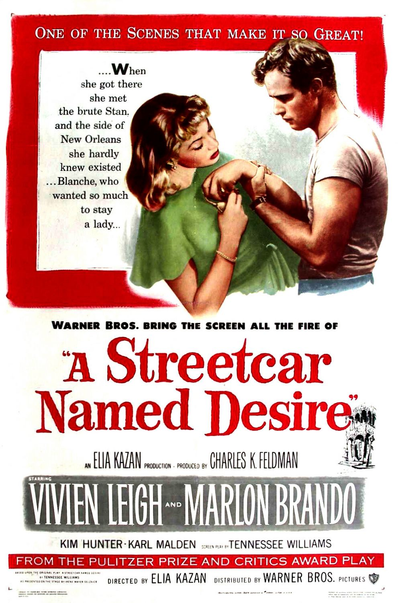

A Streetcar Named Desire
24th Academy Awards
(Oscars 1952)
12 Nominations, 4 Awards
| Nominations | ||
|---|---|---|
| Category | Nominees | Result |
| Best Motion Picture | Charles K. Feldman | Nominated |
| Actor | Marlon Brando | Nominated |
| Actress | Vivien Leigh | Won |
| Actor in a Supporting Role | Karl Malden | Won |
| Actress in a Supporting Role | Kim Hunter | Won |
| Directing | Elia Kazan | Nominated |
| Writing (Screenplay) | Tennessee Williams | Nominated |
| Cinematography (Black-and-White) | Harry Stradling | Nominated |
| Art Direction (Black-and-White) | George James Hopkins and Richard Day | Won |
| Costume Design (Black-and-White) | Lucinda Ballard | Nominated |
| Sound Recording | Col. Nathan Levinson | Nominated |
| Music (Music Score of a Dramatic or Comedy Picture) | Alex North | Nominated |